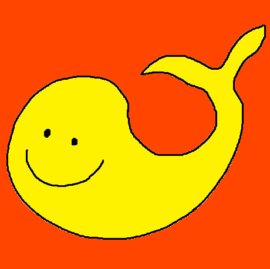

안녕하세요, 류형주입니다.
저는 호기심이 참 많은 사람입니다. 편의점에서 과자를 골라도 새로 나온 과자, 점심을 먹을 때도 가본적 없는 밥집에 가는 것을 좋아합니다.
고등학교 때, 어떻게 0과 1로만 생각하는 컴퓨터가 계산하고, 저장하고, 화면을 보여줄 수 있는지가 궁금해 컴퓨터를 전공하게 되었습니다.
하면 할 수록 점점 더 재미를 느꼈고, 점점 더 궁금한 것도 많아졌습니다.
지금도 궁금한 것을 시도하고 경험하는 것은 제 인생의 큰 원동력입니다.
제 목표인 '머릿속에 있는 것을 만들 수 있는 개발자'가 될 때까지의 여정을 기록할 생각입니다.
방문해주셔서 감사합니다.
hhlab 드림.
git
blog